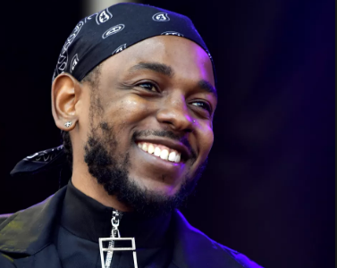
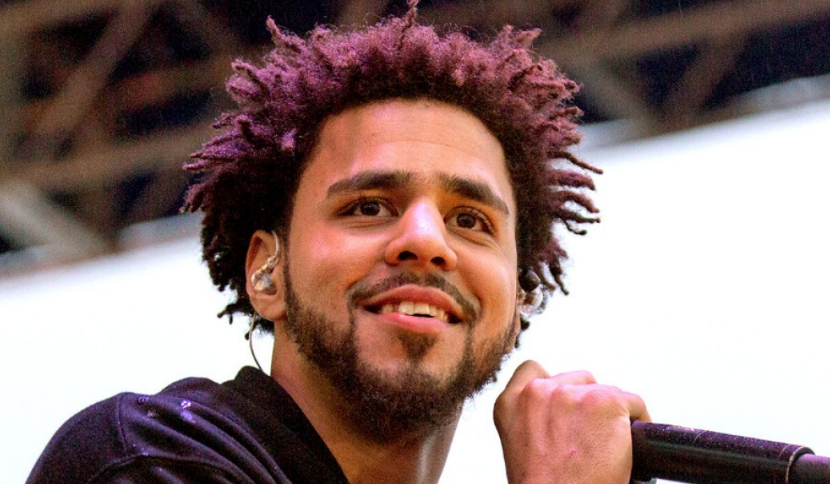

First let's talk on what new rap is all about. New rap is about many different kinds of things. Rap is more about awareness towards issues in the world. Rappers like lil Peep and xxxtentacion talk about love and depression. I think this is very important because depression is not really a thing the world talks about
and other topics such as political statements
XXXTentacion passed away June 18th, 2018. His music sales rises 1,603%. His album "?" got top ten on billboard 200 charts.

Kenndrick Lamar was a straight A student. Now has a net worth of $45 million, making more money than his idol Tupac.

Rap is now the most popular music choice in the world. Rap is very versatile with many different kinds of rap going from hype, to gangster rap, to sad rap, and many more.